<ion-header [translucent]="true">
  <ion-toolbar>
    <ion-title>
      Persone
    </ion-title>
  </ion-toolbar>
</ion-header>

<ion-content [fullscreen]="true" matRipple [matRippleColor]="central.color"
>
  <div class="bicolor">
    
    <div *ngIf="central.error" style=" padding:1em ;text-align: center; color: white; background-color: rgb(255, 115, 115);">
      ERROR
      <ion-icon name="close-circle-outline" (click)="central.error = null" style="margin-left: 5px; cursor: pointer;"></ion-icon>
    </div>
    <div style="display: flex; flex-wrap: wrap;">

      <button routerLink="./nuovoutente" class="purple-btn ion-margin">
        <ion-icon name="add-outline"></ion-icon>
        aggiungi un nuovo utente</button>

    </div>

    <table cdkDrag>
      <tr class="labels">
        <th *ngFor="let i of central.users_labels">
          <div class="sticker">
            <ion-icon name="folder-open-outline"></ion-icon>
          </div>
          <span>{{i}}</span>
        </th>
      </tr>
      <tr *ngFor="let i of central.users" style="cursor: pointer;" class="tr-bg">
        <td [routerLink]="['tabs/utenti/infoutente', i.id]">{{i.id}}</td>
        <td [routerLink]="['tabs/utenti/infoutente', i.id]" class="txt-capital">{{i.name}} {{i.surname}}</td>
        <td [routerLink]="['tabs/utenti/infoutente', i.id]" class="txt-capital">{{i.username}}</td>
        <td class="pl-5" [routerLink]="['tabs/utenti/infoutente', i.id]">{{i.group}}</td>
        <td>
          <ion-icon [routerLink]="['tabs/utenti/modificautente', i.id]"
             class="pencil" name="pencil-outline"></ion-icon>
          <ion-icon class="trash" name="trash-outline" (click)="central.deleteUsers(i)"></ion-icon>
        </td>
      </tr>
    </table>


  </div>

</ion-content>
